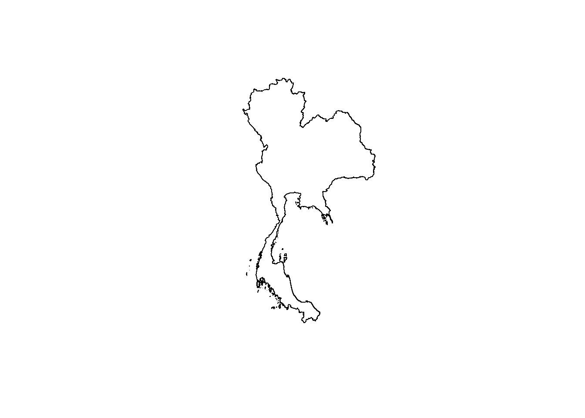
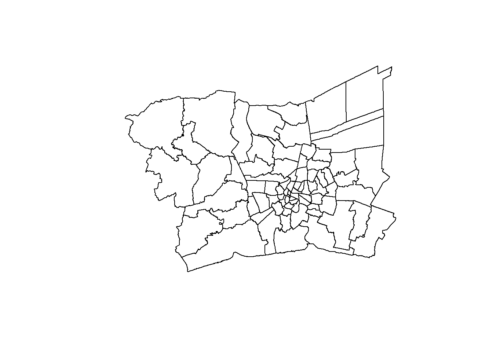
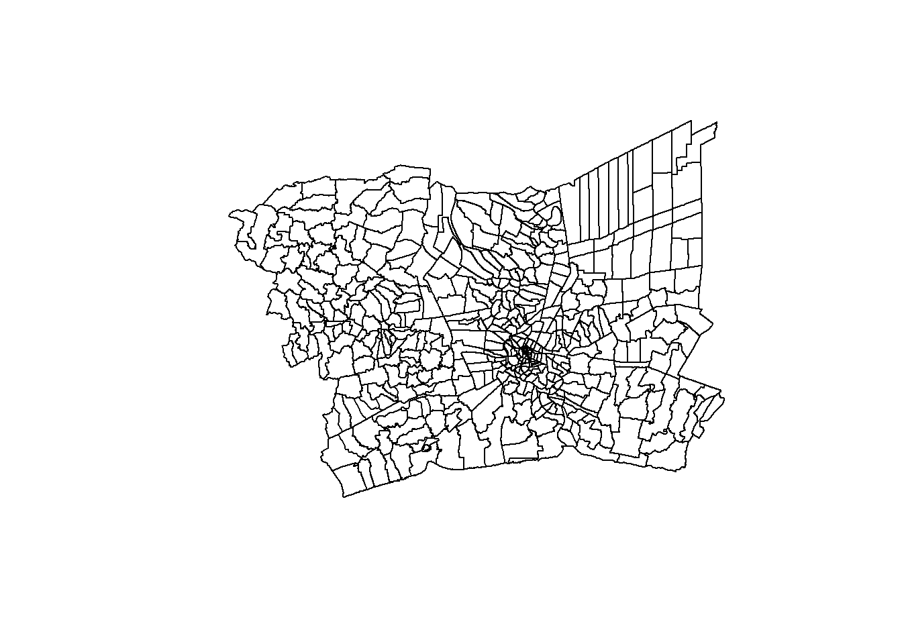
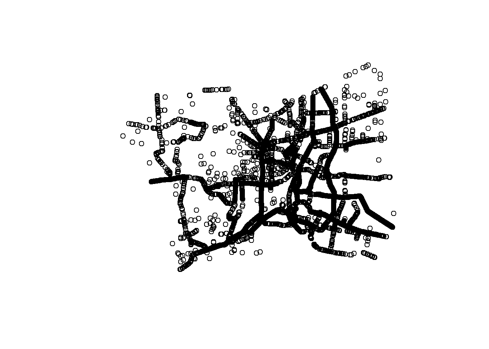
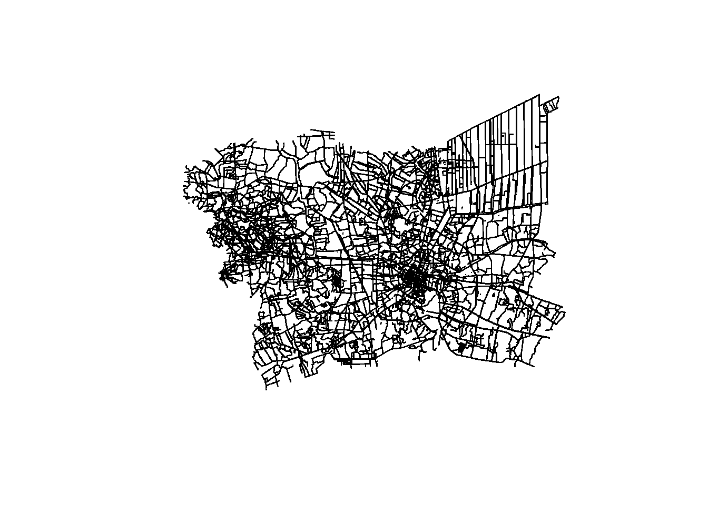
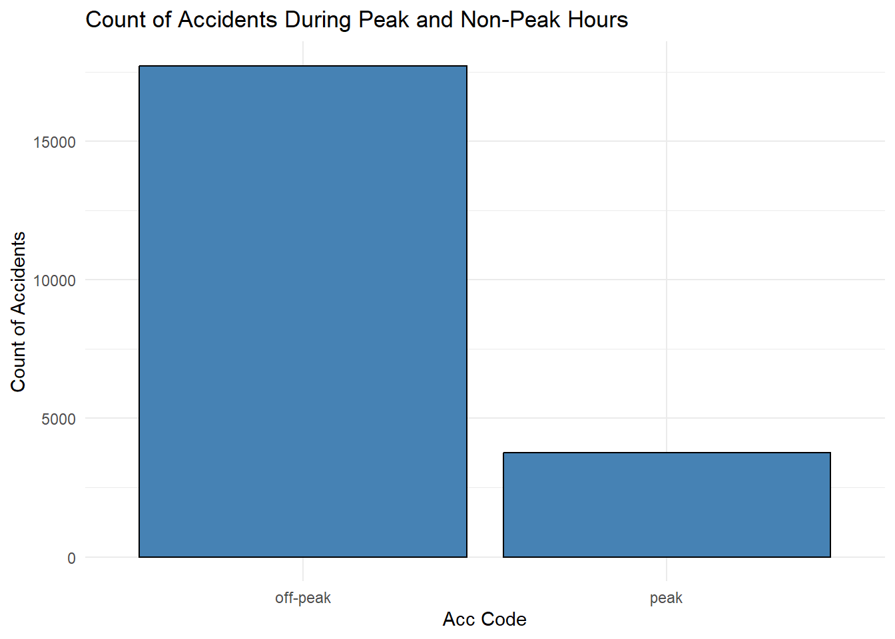
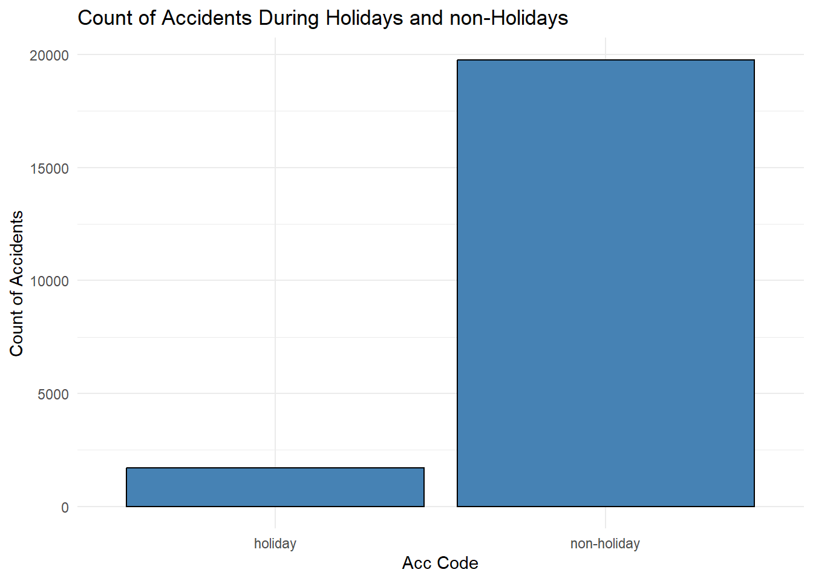
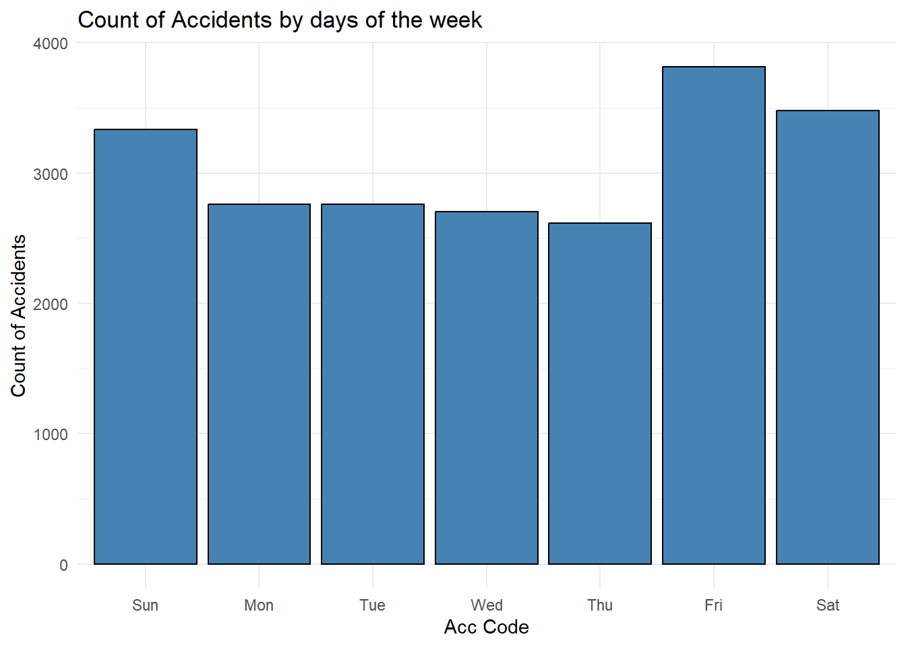
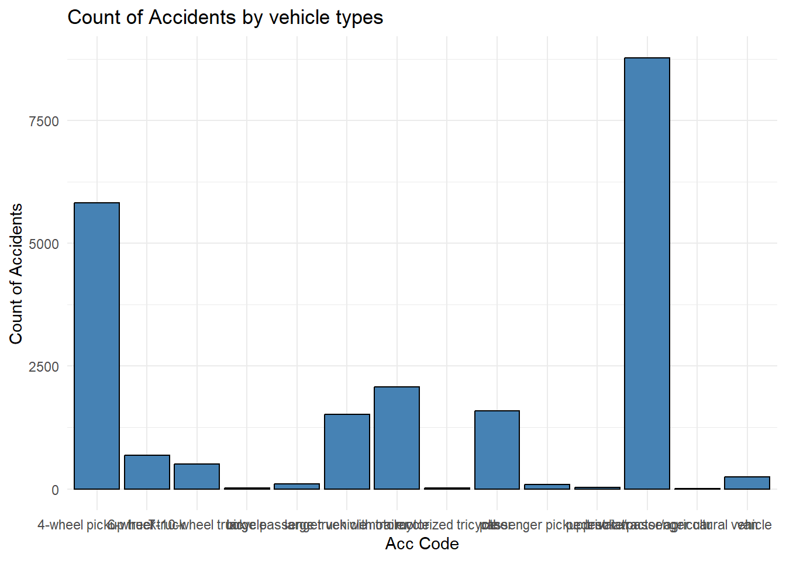
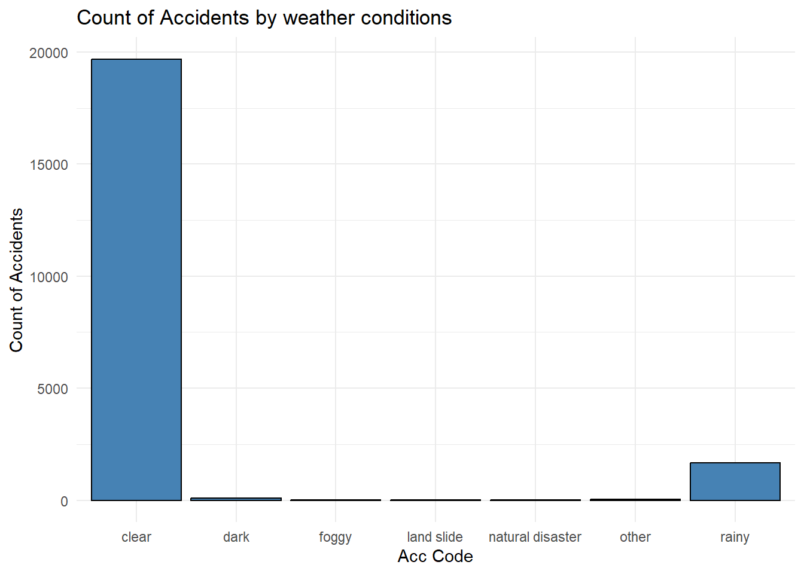

pacman::p_load(sf, sp, raster, spatstat, tmap, tidyverse, lubridate, readxl, spNetwork)
set.seed(1234) #set seed to ensure the result is consistentTake Home Exercise 01
Take Home Exercise 1
Loading of Libraries.
Data preparation and Transformation
Loading of Thai Accident Data
Loading of Thai accident data and transforming the incident datetime to date, day, hour.
The data transformation steps for incident time is done to categories when did the accident occurred. The dataframe is subsequently match with the Thai public holiday database to pick up holidays,and further process to differentiate between weekend or weekdays.
#|eval: false
rdacc_sf <- read_csv("data/thai_road_accident_2019_2022.csv") %>%
filter(!is.na(longitude) & longitude != "",
!is.na(latitude) & latitude != "") %>%
st_as_sf(coords = c("longitude", "latitude"), crs = 4326) %>%
st_transform(crs = 32647) %>%
# Ensure datetime is correctly parsed
mutate(incident_datetime = parse_date_time(incident_datetime, orders = "d/m/Y H:M")) %>%
mutate(month_num = month(incident_datetime)) %>%
mutate(month_fac = month(incident_datetime, label = TRUE, abbr = TRUE)) %>%
mutate(day = day(incident_datetime)) %>%
mutate(dayofweek = wday(incident_datetime, label = TRUE, abbr = TRUE)) %>%
mutate(weekend = if_else(dayofweek %in% c("Sat", "Sun"), "weekend", "weekday")) %>%
mutate(hour = hour(incident_datetime)) %>%
mutate(peak_hours = if_else(dayofweek %in% c("Mon", "Tue", "Wed", "Thu", "Fri") &
((hour >= 7 & hour < 9) | (hour >= 16 & hour < 19)),
"peak", "off-peak"))%>%
mutate(incident_date = format(incident_datetime, "%d/%m/%Y"))Loading of Thai holiday data.
The code chunk below filters the public holiday containing on the national holidays.
Depending on the requirements of the project, the file name “Thai_PH” contains different types of holidays types such as Observance, Season , Bank holiday and National Holidays which could be used for futher projects.
For this project, we will be using the National Holidays.
#|eval: false
Thai_PH <- read_csv("data/ThaiPH_2019to2022_csv.csv") %>%
mutate(Date = strftime(strptime(Date, format = "%d/%m/%Y"), format = "%d/%m/%Y")) %>%
filter(Type == "National holiday")Joining of Accident data with the national holidays data
rdacc_sf <- rdacc_sf %>%
left_join(Thai_PH, by = c("incident_date" = "Date")) %>%
mutate(is_holiday = if_else(!is.na(Name), "holiday", "non-holiday")) Writing the process data to rds folder and re-reading it.
write_rds(rdacc_sf,"data/rds/rdacc_sf.rds")#to save the file to rdsrdacc_sf<-read_rds("data/rds/rdacc_sf.rds") #re-reading the rdacc_sf file to the environmentsPreparing the data for Bangkok Metropolitan Region
Based on the metadata, province of the Bangkok Metropolitan Region Codes are: ADM1_PCODE == “TH10”, “TH73”, “TH12”, “TH13”, “TH11”, “TH74”
#|eval: false
SAB = st_read(dsn = "data", layer = "tha_admbnda_adm0_rtsd_20220121") %>%
st_transform(crs = 32647)%>% # Set CRS to WGS84
st_transform(crs = 32647) # Transform to EPSG:32647Reading layer `tha_admbnda_adm0_rtsd_20220121' from data source
`C:\dewschan\ISSS622-GAA\Take_home_Ex\Take_home_01\data' using driver `ESRI Shapefile'
Simple feature collection with 1 feature and 13 fields
Geometry type: MULTIPOLYGON
Dimension: XY
Bounding box: xmin: 97.34336 ymin: 5.613038 xmax: 105.637 ymax: 20.46507
Geodetic CRS: WGS 84SAB_1 = st_read(dsn = "data", layer = "tha_admbnda_adm1_rtsd_20220121")%>%
st_transform(crs = 32647) %>%
filter(ADM1_PCODE == "TH10" | ADM1_PCODE == "TH73"| ADM1_PCODE == "TH12" | ADM1_PCODE == "TH13"| ADM1_PCODE == "TH11"| ADM1_PCODE == "TH74") %>% # Set CRS to WGS84
st_transform(crs = 32647) # Transform to EPSG:32647Reading layer `tha_admbnda_adm1_rtsd_20220121' from data source
`C:\dewschan\ISSS622-GAA\Take_home_Ex\Take_home_01\data' using driver `ESRI Shapefile'
Simple feature collection with 77 features and 16 fields
Geometry type: MULTIPOLYGON
Dimension: XY
Bounding box: xmin: 97.34336 ymin: 5.613038 xmax: 105.637 ymax: 20.46507
Geodetic CRS: WGS 84SAB_2 = st_read(dsn = "data", layer = "tha_admbnda_adm2_rtsd_20220121")%>%
st_transform(crs = 32647)%>%
filter(ADM1_PCODE == "TH10" | ADM1_PCODE == "TH73"| ADM1_PCODE == "TH12" | ADM1_PCODE == "TH13"| ADM1_PCODE == "TH11"| ADM1_PCODE == "TH74") %>% # Set CRS to WGS84
st_transform(crs = 32647) # Transform to EPSG:32647Reading layer `tha_admbnda_adm2_rtsd_20220121' from data source
`C:\dewschan\ISSS622-GAA\Take_home_Ex\Take_home_01\data' using driver `ESRI Shapefile'
Simple feature collection with 928 features and 19 fields
Geometry type: MULTIPOLYGON
Dimension: XY
Bounding box: xmin: 97.34336 ymin: 5.613038 xmax: 105.637 ymax: 20.46507
Geodetic CRS: WGS 84SAB_3 = st_read(dsn = "data", layer = "tha_admbnda_adm3_rtsd_20220121")%>%
st_transform(crs = 32647)%>%
filter(ADM1_PCODE == "TH10" | ADM1_PCODE == "TH73"| ADM1_PCODE == "TH12" | ADM1_PCODE == "TH13"| ADM1_PCODE == "TH11"| ADM1_PCODE == "TH74") %>% # Set CRS to WGS84
st_transform(crs = 32647) # Transform to EPSG:32647Reading layer `tha_admbnda_adm3_rtsd_20220121' from data source
`C:\dewschan\ISSS622-GAA\Take_home_Ex\Take_home_01\data' using driver `ESRI Shapefile'
Simple feature collection with 7425 features and 22 fields
Geometry type: MULTIPOLYGON
Dimension: XY
Bounding box: xmin: 97.34336 ymin: 5.613038 xmax: 105.637 ymax: 20.46507
Geodetic CRS: WGS 84writing and reading the data in rds folder
write_rds(SAB,"data/rds/SAB.rds")
write_rds(SAB_1,"data/rds/SAB_1.rds")
write_rds(SAB_2,"data/rds/SAB_2.rds")
write_rds(SAB_3,"data/rds/SAB_3.rds")#to save the file to rdsSAB<-read_rds("data/rds/SAB.rds")#re-reading the acc file to the environments
SAB_1<-read_rds("data/rds/SAB_1.rds")
SAB_2<-read_rds("data/rds/SAB_2.rds")
SAB_3<-read_rds("data/rds/SAB_3.rds")To check on the st geometry data is able to be plotted properly.
plot(st_geometry(SAB))#Outline of Thailand 
Loading Thailand Road data
#|eval: false
Rd = st_read(dsn = "data", layer = "hotosm_tha_roads_lines_shp")%>%
st_set_crs(4326)%>%
st_transform(crs = 32647)Reading layer `hotosm_tha_roads_lines_shp' from data source
`C:\dewschan\ISSS622-GAA\Take_home_Ex\Take_home_01\data' using driver `ESRI Shapefile'
Simple feature collection with 2792590 features and 14 fields
Geometry type: MULTILINESTRING
Dimension: XY
Bounding box: xmin: 97.34457 ymin: 5.643645 xmax: 105.6528 ymax: 20.47168
CRS: NAInspecting data structure.
glimpse(Rd)Rows: 2,792,590
Columns: 15
$ name <chr> "ถนนฉลองกรุง", "ซอยฉลองกรุง 1/1", NA, NA, "ถนนฉลองกรุง", NA, "…
$ name_en <chr> "Chalong Krung Road", "Soi Chalong Krung 1/1", NA, NA, "Cha…
$ highway <chr> "secondary", "residential", "secondary_link", "service", "s…
$ surface <chr> "paved", NA, NA, NA, "concrete", NA, NA, "unpaved", NA, NA,…
$ smoothness <chr> NA, NA, NA, NA, NA, NA, NA, NA, NA, NA, NA, NA, NA, NA, NA,…
$ width <chr> NA, NA, NA, NA, NA, NA, NA, NA, NA, NA, NA, NA, NA, NA, NA,…
$ lanes <chr> NA, NA, NA, NA, "2", NA, NA, NA, NA, NA, NA, NA, NA, NA, NA…
$ oneway <chr> "yes", NA, "yes", NA, "yes", NA, NA, NA, NA, NA, NA, NA, NA…
$ bridge <chr> NA, NA, NA, NA, "yes", NA, NA, NA, NA, NA, NA, NA, NA, NA, …
$ layer <chr> NA, NA, NA, NA, "1", NA, NA, NA, NA, NA, NA, NA, NA, NA, NA…
$ source <chr> NA, NA, NA, NA, "Bing", NA, NA, "GPS", NA, NA, NA, NA, NA, …
$ name_th <chr> "ถนนฉลองกรุง", "ซอยฉลองกรุง 1/1", NA, NA, "ถนนฉลองกรุง", NA, "…
$ osm_id <dbl> 1125681229, 594401607, 472283206, 594401608, 116847248, 317…
$ osm_type <chr> "ways_line", "ways_line", "ways_line", "ways_line", "ways_l…
$ geometry <MULTILINESTRING [m]> MULTILINESTRING ((693686.1 ..., MULTILINEST…st_crs(Rd)Coordinate Reference System:
User input: EPSG:32647
wkt:
PROJCRS["WGS 84 / UTM zone 47N",
BASEGEOGCRS["WGS 84",
ENSEMBLE["World Geodetic System 1984 ensemble",
MEMBER["World Geodetic System 1984 (Transit)"],
MEMBER["World Geodetic System 1984 (G730)"],
MEMBER["World Geodetic System 1984 (G873)"],
MEMBER["World Geodetic System 1984 (G1150)"],
MEMBER["World Geodetic System 1984 (G1674)"],
MEMBER["World Geodetic System 1984 (G1762)"],
MEMBER["World Geodetic System 1984 (G2139)"],
ELLIPSOID["WGS 84",6378137,298.257223563,
LENGTHUNIT["metre",1]],
ENSEMBLEACCURACY[2.0]],
PRIMEM["Greenwich",0,
ANGLEUNIT["degree",0.0174532925199433]],
ID["EPSG",4326]],
CONVERSION["UTM zone 47N",
METHOD["Transverse Mercator",
ID["EPSG",9807]],
PARAMETER["Latitude of natural origin",0,
ANGLEUNIT["degree",0.0174532925199433],
ID["EPSG",8801]],
PARAMETER["Longitude of natural origin",99,
ANGLEUNIT["degree",0.0174532925199433],
ID["EPSG",8802]],
PARAMETER["Scale factor at natural origin",0.9996,
SCALEUNIT["unity",1],
ID["EPSG",8805]],
PARAMETER["False easting",500000,
LENGTHUNIT["metre",1],
ID["EPSG",8806]],
PARAMETER["False northing",0,
LENGTHUNIT["metre",1],
ID["EPSG",8807]]],
CS[Cartesian,2],
AXIS["(E)",east,
ORDER[1],
LENGTHUNIT["metre",1]],
AXIS["(N)",north,
ORDER[2],
LENGTHUNIT["metre",1]],
USAGE[
SCOPE["Navigation and medium accuracy spatial referencing."],
AREA["Between 96°E and 102°E, northern hemisphere between equator and 84°N, onshore and offshore. China. Indonesia. Laos. Malaysia - West Malaysia. Mongolia. Myanmar (Burma). Russian Federation. Thailand."],
BBOX[0,96,84,102]],
ID["EPSG",32647]]Filtering to the required highwayys
#|eval: false
Rd <- Rd %>%
filter(highway %in% c("motorway", "trunk", "primary", "secondary", "tertiary", "unclassified"))Saving the road data to the rds folder.
write_rds(Rd,"data/rds/Rd.rds")
#to save the file to rdsReading the road data from rds folder.
Rd<-read_rds("data/rds/Rd.rds")Merging polygon of the 5 provinces in Bangkok Metropoiltan Area into 1 overall boundary
This will be the main boundary which will be used to sieve out the road network and road accidents which have occured in Bangkok Metropolitan Area.
SAB_1_M<- SAB_1 %>%
st_union()#plot(st_geometry(rdacc_sf)), Need to intersect
plot(st_geometry(SAB))#Outline of Thailand 
plot(st_geometry(SAB_1_M))#Outline of Bangkok MR 
plot(st_geometry(SAB_2)) 
plot(st_geometry(SAB_3))
#plot(st_geometry(Rd))# need to intersect then plot Intersect Thailand Road and to sieve out the Road at Bangkok Metropolitan area.
Bkk_Rd<-st_intersection (Rd, SAB_1)Saving the Bankok road data to the rds folder.
write_rds(Bkk_Rd,"data/rds/Bkk_Rd.rds")
#to save the file to rdsReading the Bangkok road data from rds folder.
Bkk_Rd<-read_rds("data/rds/Bkk_Rd.rds")Merging multilinestring to single line.
Bkk_rds_Ln <- Bkk_Rd[(st_geometry_type(Bkk_Rd)== "LINESTRING"),]Bkk_rds_Ln Simple feature collection with 26689 features and 30 fields
Geometry type: LINESTRING
Dimension: XY
Bounding box: xmin: 590159.4 ymin: 1484506 xmax: 712235 ymax: 1579041
Projected CRS: WGS 84 / UTM zone 47N
First 10 features:
name name_en highway surface smoothness width
1 ถนนฉลองกรุง Chalong Krung Road secondary paved <NA> <NA>
2 ถนนฉลองกรุง Chalong Krung Road secondary concrete <NA> <NA>
168 ถนนประชาสงเคราะห์ Pracha Songkhro Road tertiary asphalt <NA> <NA>
180 ถนนวิภาวดีรังสิต Vibhavadi Rangsit Road secondary <NA> <NA> <NA>
182 ถนนดินแดง Din Daeng Road primary <NA> <NA> <NA>
183 ถนนวิภาวดีรังสิต Vibhavadi Rangsit Road secondary <NA> <NA> <NA>
184 ถนนดินแดง Din Daeng Road primary <NA> <NA> <NA>
274 ถนนจรัญสนิทวงศ์ Charan Sanit Wong Road secondary <NA> <NA> <NA>
331 ถนนลำลูกกา Lam Luk Ka Road secondary <NA> <NA> <NA>
351 ถนนราชปรารภ Ratchaprarop Road secondary asphalt <NA> <NA>
lanes oneway bridge layer source name_th osm_id osm_type
1 <NA> yes <NA> <NA> <NA> ถนนฉลองกรุง 1125681229 ways_line
2 2 yes yes 1 Bing ถนนฉลองกรุง 116847248 ways_line
168 <NA> <NA> <NA> <NA> <NA> ถนนประชาสงเคราะห์ 25933535 ways_line
180 <NA> yes <NA> <NA> <NA> ถนนวิภาวดีรังสิต 835519345 ways_line
182 <NA> yes <NA> <NA> <NA> ถนนดินแดง 1055365750 ways_line
183 <NA> yes <NA> <NA> <NA> ถนนวิภาวดีรังสิต 1306889182 ways_line
184 <NA> yes <NA> <NA> <NA> ถนนดินแดง 1306889184 ways_line
274 <NA> yes <NA> <NA> <NA> ถนนจรัญสนิทวงศ์ 140476647 ways_line
331 3 yes <NA> <NA> <NA> ถนนลำลูกกา 1312137725 ways_line
351 6 <NA> <NA> <NA> <NA> ถนนราชปรารภ 784943756 ways_line
Shape_Leng Shape_Area ADM1_EN ADM1_TH ADM1_PCODE ADM1_REF ADM1ALT1EN
1 2.417227 0.1313387 Bangkok กรุงเทพมหานคร TH10 <NA> <NA>
2 2.417227 0.1313387 Bangkok กรุงเทพมหานคร TH10 <NA> <NA>
168 2.417227 0.1313387 Bangkok กรุงเทพมหานคร TH10 <NA> <NA>
180 2.417227 0.1313387 Bangkok กรุงเทพมหานคร TH10 <NA> <NA>
182 2.417227 0.1313387 Bangkok กรุงเทพมหานคร TH10 <NA> <NA>
183 2.417227 0.1313387 Bangkok กรุงเทพมหานคร TH10 <NA> <NA>
184 2.417227 0.1313387 Bangkok กรุงเทพมหานคร TH10 <NA> <NA>
274 2.417227 0.1313387 Bangkok กรุงเทพมหานคร TH10 <NA> <NA>
331 2.417227 0.1313387 Bangkok กรุงเทพมหานคร TH10 <NA> <NA>
351 2.417227 0.1313387 Bangkok กรุงเทพมหานคร TH10 <NA> <NA>
ADM1ALT2EN ADM1ALT1TH ADM1ALT2TH ADM0_EN ADM0_TH ADM0_PCODE date
1 <NA> <NA> <NA> Thailand ประเทศไทย TH 2019-02-18
2 <NA> <NA> <NA> Thailand ประเทศไทย TH 2019-02-18
168 <NA> <NA> <NA> Thailand ประเทศไทย TH 2019-02-18
180 <NA> <NA> <NA> Thailand ประเทศไทย TH 2019-02-18
182 <NA> <NA> <NA> Thailand ประเทศไทย TH 2019-02-18
183 <NA> <NA> <NA> Thailand ประเทศไทย TH 2019-02-18
184 <NA> <NA> <NA> Thailand ประเทศไทย TH 2019-02-18
274 <NA> <NA> <NA> Thailand ประเทศไทย TH 2019-02-18
331 <NA> <NA> <NA> Thailand ประเทศไทย TH 2019-02-18
351 <NA> <NA> <NA> Thailand ประเทศไทย TH 2019-02-18
validOn validTo geometry
1 2022-01-22 -001-11-30 LINESTRING (693686.1 151979...
2 2022-01-22 -001-11-30 LINESTRING (692810.8 151863...
168 2022-01-22 -001-11-30 LINESTRING (668360.2 152245...
180 2022-01-22 -001-11-30 LINESTRING (667716.6 152278...
182 2022-01-22 -001-11-30 LINESTRING (667485.1 152210...
183 2022-01-22 -001-11-30 LINESTRING (667822.4 152298...
184 2022-01-22 -001-11-30 LINESTRING (667418.7 152214...
274 2022-01-22 -001-11-30 LINESTRING (663326.8 152716...
331 2022-01-22 -001-11-30 LINESTRING (675289.2 154281...
351 2022-01-22 -001-11-30 LINESTRING (666704.9 152103...Saving the Bankok road data to the rds folder.
write_rds(Bkk_Rd,"data/rds/Bkk_Rd.rds")
#to save the file to rdsReading the Bangkok road data from rds folder.
Bkk_Rd<-read_rds("data/rds/Bkk_Rd.rds")Saving the Linestring Bankok road data to the rds folder.
write_rds(Bkk_rds_Ln ,"data/rds/Bkk_rds_Ln.rds")
#to save the file to rdsReading the Linestring Bangkok road data from rds folder.
Bkk_rds_Ln<-read_rds("data/rds/Bkk_rds_Ln.rds")ploting Merged bankok Layer to ensure that the geometry is working.
plot(st_geometry(Bkk_rds_Ln))Intersect Road Accidents which happeneded at Bangkok Metropoliton Area.
In the code chunk below, we intersect the the accidents with Bangkok Metropoliton Area, then the output is convert back to the Sf object so that the accident data could be joined with the necessary information which allow us to carry out explotary data analysis in the subsequent sections.
Bkk_Rd_Acc <-st_intersection (SAB_1_M, rdacc_sf)
Bkk_Rd_Acc <- st_as_sf(Bkk_Rd_Acc)
Bkk_Rd_Acc<- st_join(Bkk_Rd_Acc, rdacc_sf)Plot Road Accidents at Bangkok Metropoliton Area to visualise that the correct accidents are picked up
plot(st_geometry(Bkk_Rd_Acc))
Saving the Linestring Bankok road data to the rds folder.
write_rds(Bkk_Rd_Acc,"data/rds/Bkk_Rd_Acc.rds")
#to save the file to rdsReading the Linestring Bangkok road data from rds folder.
Bkk_Rd_Acc<-read_rds("data/rds/Bkk_Rd_Acc.rds")Adding buffer to Bangkok Road.
Bkk_Rd_m_50 <- st_buffer(Bkk_rds_Ln, dist = 50) # buffer distance in buffer
# Check the result
plot(st_geometry(Bkk_Rd_m_50))
Saving the Linestring Bankok road data to the rds folder.
write_rds(Bkk_Rd_m_50,"data/rds/Bkk_Rd_m_50.rds")
#to save the file to rdsReading the Linestring Bangkok road data from rds folder.
Bkk_Rd_m_50<-read_rds("data/rds/Bkk_Rd_m_50.rds")Network KDE (NKDE) Analysis:
https://cran.r-project.org/web/packages/spNetwork/vignettes/NKDE.html
Referring to the example stated in the documentation, the bike accidents are plotted at radius of 300. and lixlize is set at 200m. Given the large large area of the area, Lixel should be size to up increase to 100 km
Apply the lixelize_lines function
lixels <- lixelize_lines(Bkk_rds_Ln, 100000, mindist = 37500)
samples <- lines_center(lixels)
densities <- nkde(Bkk_rds_Ln, events = Bkk_Rd_Acc, w = rep(1, nrow(Bkk_Rd_Acc)), samples = samples, kernel_name = “quartic”, bw = 100000, #change the bandwidth to 2km div= “bw”, method = “simple”, digits = 1, tol = 1, grid_shape = c(100,100), max_depth = 2,# reducing the depth to aid in the calculation agg = 100000, #we aggregate events within a 1km radius (faster calculation) sparse = TRUE, verbose = FALSE)
samples\(density <- densities lixels\)density <- densities
re-scaling to help the mapping
samples\(density <- samples\)density1000 lixels\(density <- lixels\)density1000
To prepare interactive and high cartographic quality map visualization
tmap_mode(‘plot’) tm_shape(lixels) + tm_lines(col = “density”) + tm_shape(Bkk_Rd_Acc)+ tm_dots()
#k function kfun_Bkk_Acc_Ln <- kfunctions(Bkk_rds_Ln, Bkk_Rd_Acc, start = 0, end = 1000, step = 50, width = 50, nsim = 20, # 50 simulation, start from 0. resolution = 50, verbose = FALSE, conf_int = 0.05)
kfun_Bkk_Acc_Lne$plotk
Exploratory Data Analysis
The following sections exploratory data analysis. Histograms were plotted to view if there are any observations observed for the accidents which occurred within Bangkok Metropolitan Area.
1. Accidents occured during peak and non-peak hours, holidays and non holidays.
Based on the following data generated, majority of the accidents have occurred outside the peak hours. Peak hours in Bangkok Metropolitan Area is defined as 7 – 9 AM and 4 – 7 PM on weekdays for this project.
ggplot(Bkk_Rd_Acc, aes(x = peak_hours)) +
geom_histogram(stat = "count", fill = "steelblue", color = "black", bins = 2) +
labs(title = "Count of Accidents During Peak and Non-Peak Hours",
x = "Acc Code",
y = "Count of Accidents") +
theme_minimal()
The following code shows the number of accidents which took place during the holidays vs non holidays.
Although that based on the histogram majority of the accidents occurred during non- holidays. This should not be considered as the number of days which was public holiday is much lower than non holiday. Hence it will be more accurate to normalise by the number of days to provide a more accurate picture.
ggplot(Bkk_Rd_Acc, aes(x = is_holiday)) +
geom_histogram(stat = "count", fill = "steelblue", color = "black", bins = 2) +
labs(title = "Count of Accidents During Holidays and non-Holidays",
x = "Acc Code",
y = "Count of Accidents") +
theme_minimal()
The next code chunk is to plot the accidents which had occurred through the days in the week.
Based on the chart, it is observed that it has occurred more commonly on Friday, Saturday and Sunday in the Bangkok Metropolitan Area.
ggplot(Bkk_Rd_Acc, aes(x = dayofweek)) +
geom_histogram(stat = "count", fill = "steelblue", color = "black", bins = 2) +
labs(title = "Count of Accidents by days of the week",
x = "Acc Code",
y = "Count of Accidents") +
theme_minimal()
The following code chunk is to plot the type of vehicles which were common to involve accidents.
ggplot(Bkk_Rd_Acc, aes(x = vehicle_type)) +
geom_histogram(stat = "count", fill = "steelblue", color = "black", bins = 2) +
labs(title = "Count of Accidents by vehicle types",
x = "Acc Code",
y = "Count of Accidents") +
theme_minimal()
The following code view the accidents which had occurred in different weather conditions.
ggplot(Bkk_Rd_Acc, aes(x = weather_condition)) +
geom_histogram(stat = "count", fill = "steelblue", color = "black", bins = 2) +
labs(title = "Count of Accidents by weather conditions",
x = "Acc Code",
y = "Count of Accidents") +
theme_minimal()